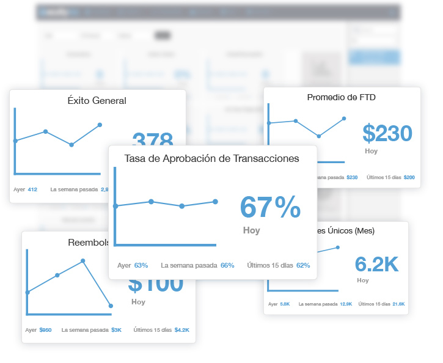
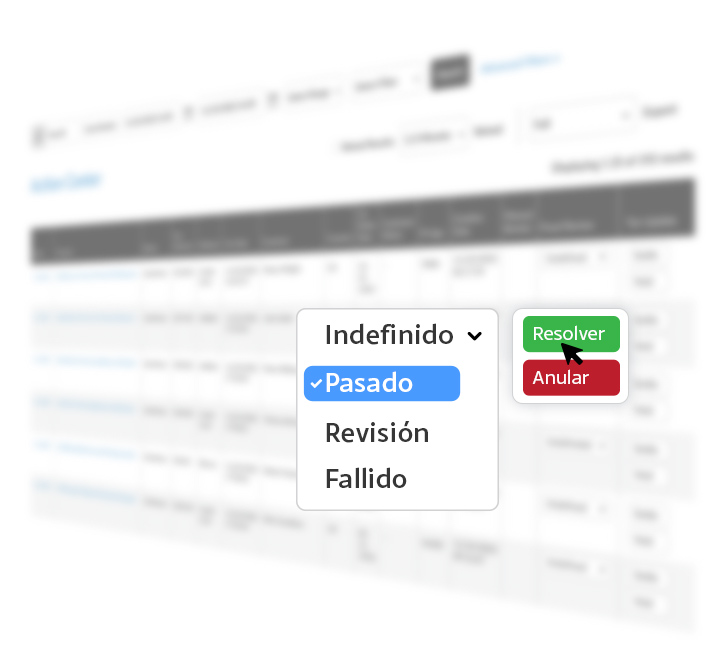

Inglés
Inglés Portugués
PortuguésNunca Deje Escapar Actividades Sospechosas
Monitoreo continuo con alertas en tiempo real para una protección inigualable.

Detección Temprana
Nuestro monitoreo avanzado en tiempo real permite la detección temprana de actividades sospechosas, lo que lo ayuda a prevenir transacciones fraudulentas.

Respuesta Más Rápida
Reaccione más rápidamente ante posibles fraudes con todos los datos en una sola plataforma, minimizando las pérdidas financieras y reduciendo el impacto en los clientes.

Precisión Mejorada
Las verificaciones de varios niveles con aprendizaje automático garantizan alertas precisas y le permiten tomar decisiones informadas sobre posibles fraudes.

Rentable
Con una única plataforma de análisis de datos y riesgos, ahorrará tiempo y dinero, reducirá la revisión manual y agilizará la gestión del fraude.
Inteligencia Profunda
Tablero en vivo para el rendimiento.
Totalmente Personalizable
¡Tome el control de su gestión de riesgos con nuestro tablero personalizable! Configure sin esfuerzo su resumen de riesgos activando los widgets que desee, creando una interfaz personalizada y fácil de usar.
Vista Filtrada
Desde comerciantes hasta canales de pago, desde fechas hasta clientes, ¡nuestra plataforma le permite filtrar y enfocarse! Diga adiós a las búsquedas tediosas y dé la bienvenida a una gestión de riesgos eficaz y optimizada.
Fácil de Leer
Obtenga una vista en tiempo real de su riesgo como nunca antes. Desde niveles de advertencia escalonados hasta segmentos de prioridad de riesgo personalizados, toda la información que necesita está al alcance de su mano.



Perfiles de Clientes
Comprenda, rastree, administre y confíe en sus clientes con facilidad.
La Primicia Completa
Desde los detalles generales de la persona del cliente, los resultados de la verificación de datos hasta la administración de listas, la localización, la identificación del dispositivo, el historial, los comportamientos y los patrones, nuestros perfiles de clientes le brindan todos los detalles jugosos que necesita para administrar el riesgo.
Transacciones
Di adiós al caos de transacciones. Todas las transacciones de los clientes están vinculadas y filtradas dentro de su perfil asociado, por lo que puede encontrar y revisar rápidamente las que necesitan atención o verificar el comportamiento transaccional en busca de actividades sospechosas.
Explore las Verificaciones de Identificación Digital
Centro de Acción
Recarga de datos cada 30 segundos para una mitigación precisa del fraude.
Configúralo y Olvídalo Rechazo Automático
Según sus umbrales de alto riesgo, nuestra plataforma rechaza automáticamente cualquier amenaza potencial, para que pueda relajarse y concentrarse en lo que mejor sabe hacer.
Revisión Instantánea de Fraude
Simplemente actualice el estado de Revisión de fraude para mantenerse al tanto de las amenazas potenciales y proteger su negocio y sus clientes.
Análisis de Pre-Autorización de Transacciones
Analice el tráfico antes de enviarlo para su procesamiento y, con solo un clic, defina las funciones de liquidación o anulación de transacciones para agilizar su proceso de gestión de riesgos.
Ver Detección de Fraude


Apalancamiento B.I.
Optimice con precisión de datos.
Informes Inteligentes
Evalúe con precisión el riesgo, optimice el rendimiento comercial y manténgase a la vanguardia de los posibles estafadores. Configure fácilmente informes personalizados basados en diversas métricas, como registros, transacciones, depuradores, bases de datos, dispositivos e información de varias capas para potenciar su defensa contra el fraude, sin comprometer las conversiones.
Informes de Simulación
Ya sea que esté ingresando a un nuevo mercado o industria o simplemente quiera simular su panorama de mercado de fraude actual para garantizar que la defensa esté optimizada o que los informes le permitan tomar decisiones informadas respaldadas por datos.
Ver Informes B.I.